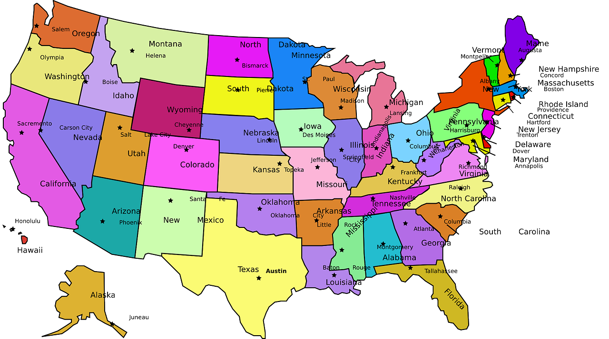

Teksas ang. Texas stan w południowej części Stanów Zjednoczonych, drugi pod względem powierzchni (po Alasce) i pod względem ludności (po Kalifornii). Położony na wybrzeżu Zatoki Meksykańskiej, sąsiadujący ze stanami Luizjana i Arkansas na wschodzie, stanem Oklahoma na północy i Nowym Meksykiem na zachodzie. Na południowym zachodzie długa granica z Meksykiem (2 tys. km), którą wyznacza rzeka Rio Grande. Obszar w większości wyżynny (Wielkie Równiny), w części południowo-zachodniej niewielkie obszary górzyste, w części południowo-wschodniej Nizina Zatokowa. W 2022 roku stan Teksas osiągnął 30 milionów mieszkańców, oraz należy do najszybciej rozwijających się i najbardziej zyskujących na populacji stanów w kraju. Nieco ponad połowa populacji stanu skupiona jest w obszarach metropolitalnych DallasFort Worth (8,1 mln mieszk.) i Houston (7,5 mln mieszk.), 4. i 5. co do wielkości aglomeracji w Stanach Zjednoczonych. Stolicą stanu jest Austin.
Kolorado ang. Colorado, wym. stan w środkowo-zachodniej części Stanów Zjednoczonych. Na północy graniczy z Wyoming i Nebraską, na wschodzie z Kansas, na południu z Oklahomą i Nowym Meksykiem, a na zachodzie z Utah. Kolorado jest jednym z trzech stanów USA niemających naturalnych granic. Wyznaczają je: długość i szerokość geograficzna, a tym samym Kolorado ma kształt czworoboku. Nazwa stanu pochodzi od nazwy rzeki Kolorado; słowo colorado oznacza w języku hiszpańskim „zabarwiony”. Kolorado jest najwyżej położonym stanem USA ze średnią wysokością 2091 m n.p.m. Największy obszar metropolitalny DenverAuroraLakewood liczy 3 mln mieszkańców i jest dziewiętnastym co do wielkości w Stanach Zjednoczonych. Ponadto stan ma liczne i popularne ośrodki sportów zimowych, w Aspen, Breckenridge, Vail, Winter Park, Steamboat Springs i Crested Butte.
Arizona stan w południowo-zachodniej części Stanów Zjednoczonych, od południa sąsiadujący z meksykańskimi stanami Sonora i Kalifornia Dolna, od zachodu z Kalifornią i Nevadą, od północy z Utah, a od wschodu z Nowym Meksykiem. Stolicą stanu jest Phoenix, którego obszar metropolitalny jest dziesiątym co do wielkości w Stanach Zjednoczonych i obejmuje około 5 mln mieszkańców. Większość mieszkańców Arizony mieszka w jednym z kilku obszarów miejskich, co sprawia, że większość stanu jest słabo zaludniona. lagodne lata na północy i łagodne zimy na południu sprawiają, że Arizona jest popularnym miejscem wypoczynku i emerytur. W latach 2000-2010 populacja :Arizony wzrosła o 24,6%, więcej niż w jakimkolwiek innym stanie USA z wyjątkiem Nevady. Stan ten zamieszkuje trzecia co do wielkości społeczność rdzennych Amerykanów, po Kalifornii i Oklahomie. Zajmuje obszar wyżynny, w północnej części rozciąga się wyżyna Kolorado.
